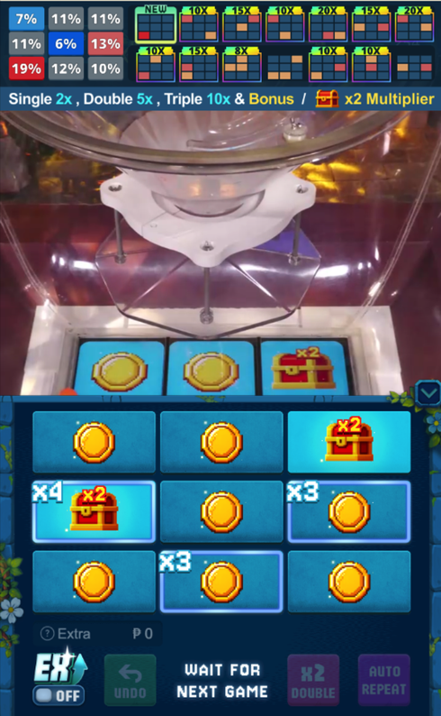

本職：遊戲數學 ｜ 深挖
這是一台真人在現場落球的機台，開獎是物理結果，不是亂數。實機測試發現球的落點機率跟理論算出來的不一樣，而且這個偏差還會變。於是這款的重點從「把數學算對」變成兩件事：把回報的調節放在可控的變數上，以及在物理雜訊下先把風險演一遍給 PM 看。
視訊實體機台：玩家隔著畫面押九宮格，現場真的落下三顆球，押中的格子依落進幾顆球派彩；另有閃電倍數（免費與付費）、寶箱加倍、三球同格觸發五層二級玩法，以及 JP。
這是一個全新玩法，提案期兩個月、做了 14 版。前 13 版都沒能讓所有高層滿意，每一版我都重做一次數學模型、模擬器與規則文件，第 14 版才通過、成為上線版本。

實機畫面：上方是落球機台的即時影像，下方是九宮格押注區，格子上會出現閃電倍數與寶箱。
電子遊戲的開獎由亂數決定，設計者說了算。這一款的開獎是一顆球真的掉下去——這就是所有困難的起點。
理論上，球落進哪一格可以用幾何與對稱性算出來。實機測試之後發現對不上：兩顆球落在同一格、三顆球落在同一格的出現機率，都跟理論值有差距。真實世界的機台有結構、材質、磨損與擺放的差別，球不會照理想模型走。
開獎既然不能控制，回報的調節就只能放在可控的東西上。這款可控的有三個：閃電落在哪一格的權重、寶箱的權重，以及多組機率表之間的切換。我把這三個當成旋鈕，用它們把實體造成的偏差補回來。
另外做了一份物理參數檔：PM 可以直接把實機測到的數據填進去，模型跟著重算，不必每次都回頭找我。
更麻煩的是，這個偏差不是一個固定的常數。機台會換、球會磨損、現場條件會變，球的偏向也跟著變。只用理論分布算出來的回報，代表不了上線後會發生什麼。
PM 在改數值、辦活動之前需要一個答案：如果玩家照他們平常的打法來玩，在真實的落球雜訊下，這套數值會走成什麼樣子？所以我做了一套人流沙盤，把玩家行為和真實落球序列一起回放。
玩家行為的來源分兩個階段：上線前，用同類既有遊戲的注單拆出行為特徵，合成一批模擬玩家；上線後，改用這款自己的注單重做。模擬玩家的每一個欄位都標了來源層級，分成四種前綴：直接從歷史注單算出來的、跨遊戲的人格特徵、針對新機制的推測、以及純粹佔位的欄位。目的是讓看報表的人一眼知道哪些是事實、哪些是推測，不會把猜的當成真的。
沙盤模擬的是「風控之下的運作」，風控有三層：依一段時間的回報切換機率表、JP 開獎時的強制控制、以及依風險分數調整位置權重。分工是這樣：線上跑的那套風控由 SERVER 實作，沙盤這一套是我做的——同樣的規則在模擬環境裡跑，用來回答「這樣設會發生什麼」。
這款的驗證不是一次做完，是一條鏈，每一段都要能對得上下一段。
上線後的注單分析做成一個單檔的儀表板：玩家分群的回報差異、落球分布的統計檢定、二級玩法的漏斗。每週的營運決策就靠這張表。
這款要通過第三方實驗室（GLI）送審。實驗室問了三件事：公告的回報率要以哪一種玩法認定（結論是取所有策略中最佳策略的回報率）、要看完整的數學文件、以及信賴區間是怎麼算的。
分工上，送審流程由 PM 主導，我出具數學文件與模擬報表，並回覆這兩項數學上的質疑。這也是為什麼模擬器要輸出「九個押注區 × 五種通關策略」的完整矩陣——實驗室要的不是平均值，是最佳策略下的數字。
開獎不可控的時候，設計的重點會換位置。電子遊戲把機率設定好就結束了；這一款要先承認實體不照理論走，把調節放到可控的變數上，再讓模型能跟著實機數據一起調整。偏差不是修一次就結束，它會一直存在。
沙盤是事前的推演，不是保證。它回答的是「這樣設下去，玩家照平常的打法來玩，大概會走成什麼樣」，讓 PM 在動手之前先看到一次；真正的答案還是上線後的注單。所以推演和回頭驗，這兩件事一直是一起做的。
這款留下的方法，後來都還在用。可控變數的思路、實機數據回填、行為資料分層標示可信度、驗證鏈的四個環節，之後的專案都照著做。